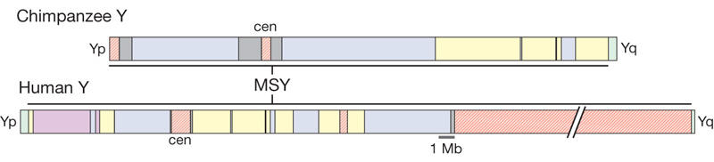

| Evolution in the News - February 2010 |
| by Do-While Jones |
Why do human and chimpanzee Y chromosomes differ so much?
You've probably heard that human DNA is 98% the same as chimpanzee DNA. At various times evolutionists have said the similarity is 96%, 98%, 98.5%, 98.8%, and 99.4%. In previous newsletters we've told you how and why evolutionists come up with these bogus numbers. 1 2 3 4 5 Last November 6, we told you how the discovery of Ardi would force evolutionists to fudge the numbers again to make the DNA proof agree with the fossil proof. Well, now they have an excuse to revise their numbers.
Evolutionists believe that Ardi proves that chimpanzees and humans diverged from their common ancestor much earlier than previously believed. That means DNA had much more time to develop differences than previously believed. So, evolutionists need proof that our DNA isn't really as similar to chimp DNA as previously thought. We believe they will claim they found it in the male sex chromosome (the Y chromosome).
One might argue that, when making a chromosome by chromosome comparison, the scientists might have compared the wrong chromosomes. But since the Y chromosome is so unique, that could not be the case in this comparison. Furthermore, one would not expect as much difference in the Y chromosome as others because it is linked to gender. Here's why.
Men are men because they have one X and one Y chromosome. Women are women because they have two X chromosomes. Children inherit one of their two sex chromosomes from the father, and one from the mother. Boys have to get their Y chromosome from the father because the mother doesn't have one. That means my Y chromosome is an exact duplicate of my father's Y chromosome; my son's Y chromosome is an exact duplicate of mine; my two grandsons' Y chromosomes are exact duplicates of my son's. All the men in our family have identical Y chromosomes.
My father got his X chromosomes from my grandmother. I got my X chromosome from my mother. My son got his X chromosome from my wife. My two grandsons got an X chromosome that is a duplicate of one or the other of my daughter-in-law's two X chromosomes. There is a 50-50 chance that my grandsons don't have identical X chromosomes, even though they have the same mother.
The point is that although all the men in my family have identical Y chromosomes, all of us (with the 50% chance of exception for my two grandsons) have different X chromosomes. Therefore, the Y chromosome should be much less variable than the X chromosome (or any other chromosome, for that matter).
If a comparison of the entire human genome and entire chimpanzee genome shows they are really 98% the same (which isn't really true), then it logically follows that the Y chromosomes of chimps and humans should be even more similar.
|
A new study comparing the Y chromosomes from humans and chimpanzees, our nearest living relatives, show[s] that they are about 30 percent different. That is far greater than the 2 percent difference between the rest of the human genetic code and that of the chimp's, according to a study appearing online Wednesday in the journal Nature. 7 |
Here is the abstract of the study the Associated Press was referring to.
|
Prevailing theories hold that Y chromosomes evolve by gene loss, the pace of which slows over time, eventually leading to a paucity of genes, and stasis. These theories have been buttressed by partial sequence data from newly emergent plant and animal Y chromosomes, but they have not been tested in older, highly evolved Y chromosomes such as that of humans. Here we finished sequencing of the male-specific region of the Y chromosome (MSY) in our closest living relative, the chimpanzee, achieving levels of accuracy and completion previously reached for the human MSY. By comparing the MSYs of the two species we show that they differ radically in sequence structure and gene content, indicating rapid evolution during the past 6 million years. The chimpanzee MSY contains twice as many massive palindromes as the human MSY, yet it has lost large fractions of the MSY protein-coding genes and gene families present in the last common ancestor. We suggest that the extraordinary divergence of the chimpanzee and human MSYs was driven by four synergistic factors: the prominent role of the MSY in sperm production, 'genetic hitchhiking' effects in the absence of meiotic crossing over, frequent ectopic recombination within the MSY, and species differences in mating behaviour. Although genetic decay may be the principal dynamic in the evolution of newly emergent Y chromosomes, wholesale renovation is the paramount theme in the continuing evolution of chimpanzee, human and perhaps other older MSYs. 8 |
This paper was received by Nature on 3 August, 2009, which was before the discovery of Ardi was published. 9 So their explanation is "rapid evolution" rather than "longer time," but we suspect evolutionists will soon see this difference as evidence of longer time since the two species had a common ancestor.
Since we are on the topic of the rate of evolution, let's digress for a moment and talk about the so-called "molecular clock."
If your education is limited to the American public school system and popular "scientific" magazines, you probably think that the molecular clock can be used to tell how long it has been since two living species shared a common ancestor. But, if you read the peer-reviewed scientific literature, you know that isn't true. That's why there are articles in the scientific literature with abstracts like this one:
|
Variable rates of molecular evolution have been documented across the tree of life, but the cause of this observed variation within and among clades remains uncertain. In plants, it has been suggested that life history traits are correlated with the rate of molecular evolution, but previous studies have yielded conflicting results. Exceptionally large phylogenies of five major angiosperm clades demonstrate that rates of molecular evolution are consistently low in trees and shrubs, with relatively long generation times, as compared with related herbaceous plants, which generally have shorter generation times. Herbs show much higher rates of molecular change but also much higher variance in rates. 10 |
The article then goes on to try to explain how to tinker with the molecular clock to make it give the "right" answer.
The real reason the molecular clock gives inconsistent, unreliable dates is because it is a bogus notion based on faulty assumptions. Here's how the clock is supposed to work.
The DNA molecule contains large sections of "junk DNA." These are sections of the DNA molecule which apparently have no function. The arrogant assumption is that since scientists can't figure out what the function is, it must be junk without any function. It is unthinkable to entertain the notion that junk DNA might actually have a purpose, but we are too stupid to figure it out.
Since junk DNA supposedly doesn't affect the physical characteristics of the plant or animal, natural selection will not filter out copying errors in junk DNA. Therefore, errors will accumulate in junk DNA. So, the number of differences in the junk DNA of two related species tells how long it has been since they shared a common ancestor with the same junk DNA.
But to convert the number of differences into a time difference, one has to assume that the mutation rate is constant, and that we know what that rate is. There is no reason to assume the mutation rate changes; but there is no reason to assume it stays the same, either. We don't know if it is constant or not.
How do we know the rate? It can be measured over hundreds or thousands of generations in species such as fruit flies or bacteria or plants, but scientists haven't had time to study it in thousands of generations of people. We could guess the rate is the same as something we can measure; but as was noted in the abstract above, the rates are different for trees than they are for herbs. Which rate should be used for humans and chimps? It's just a guess.
How do you know if the guess is right? If it agrees with what the fossils say, then it must be right. And, since the molecular rate agrees with the fossils, the fossils must be right, too!
So, this whole notion of determining when species diverged from a common ancestor depends on the four false assumptions (1) that there was a common ancestor; (2) that junk DNA has no purpose, and is therefore not affected by natural selection; (3) that the rate of mutation in junk DNA is constant; and (4) that the rate of mutation can be accurately determined by guessing.
The large difference between the chimp and human Y chromosome is surprising to evolutionists because of the assumption of evolution from a common ancestor. Therefore, their prejudice causes them to see radical differences as evidence of "rapid evolution" and "wholesale renovation." The radical differences are really evidence that they didn't come from a common ancestor.
Although the text of the article might be hard for someone without a PhD in biology to follow, the article includes a figure that is crystal clear, even without the legend.
 |
|---|
The figure shows just the male-specific region of the Y chromosome (MSY). The human MSY is clearly longer than the chimp MSY. Actually, it is even longer than it appears because they had to shorten the human MSY to make it fit on the page. (Note the break in the peach-colored part on the right side of the human MSY, which denotes deleted space.) We don't know how much of the human MSY has been deleted. All we know is that the figure caption includes this sentence:
|
Chromosomes are drawn to scale, with the exception of the large heterochromatic block on human Yq. 11 |
Presumably they had to cut out a large portion of the human Y MSY to make it fit on the page. If it was just a small portion, there would not have been any need to cut it out, would there?
We hope you aren't looking at a black-and-white copy of our newsletter because the different colors represent different regions with different functions. Only an evolutionist would see common ancestry in these remarkably different layouts of the two MSYs. It is hard to imagine how much more different they could be. But, to an evolutionist, it is evidence of "rapid evolution" and "wholesale renovation."
All the intermediate shuffling of DNA base-pairs had to be functional, if the theory of evolution is true. Do you really think that the Y chromosome could have endured that many step changes, all of which were functional? If so, one would have to believe that just about any sequence of base-pairs produces a viable male chromosome.
The comparison of human and chimp Y chromosomes does not show rapid evolution or slow evolution over a longer time. If it doesn't show independent origin, what would?
Evolutionists say that the theory of evolution "has never been falsified." That's because the evidence that falsifies evolution is right in front of their faces, but they are too blind to see it.
| Quick links to | |
|---|---|
| Science Against Evolution Home Page |
Back issues of Disclosure (our newsletter) |
| Web Site of the Month |
Topical Index |
Footnotes:
1
Disclosure, January 2003, "98% Chimp", http://www.scienceagainstevolution.org/v7i4f.htm
2
Disclosure, January 2003, "Monkey Business", http://www.scienceagainstevolution.org/v7i4n.htm
3
Disclosure, September 2003, "More Monkey Business", http://www.scienceagainstevolution.org/v7i12n.htm
4
Disclosure, October 2005, "Chimps Are Like Us", http://www.scienceagainstevolution.org/v10i1f.htm
5
Disclosure, August 2007, "Forget Everything", http://www.scienceagainstevolution.org/v11i11f.htm
6
Disclosure, November 2009, "Ardipithecus ramidus", http://www.scienceagainstevolution.org/v14i2f.htm
7
Borenstein, AP, January 13, 2010, "Men more evolved? Y chromosome study stirs debate", http://webcenters.netscape.compuserve.com/tech/story.jsp?floc=DC-headline≻=1501&idq=/ff/story/0001/20100113/1629701577.htm
8
Hughes et al., Nature, 28 January 2010, "Chimpanzee and human Y chromosomes are remarkably divergent in structure and gene content", pp. 536-539, https://www.nature.com/articles/nature08700
9
Kay, Science, 28 August 2009, "Much Hype and Many Errors", page 1074, https://www.science.org/doi/10.1126/science.1177071
10
Smith and Donoghue, Science, 3 October 2008, "Rates of Molecular Evolution Are Linked to Life History in Flowering Plants" pp. 86 - 89, https://www.science.org/doi/10.1126/science.1163197
11
Hughes et al., Nature, 28 January 2010, "Chimpanzee and human Y chromosomes are remarkably divergent in structure and gene content", pp. 537, https://www.nature.com/articles/nature08700